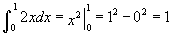
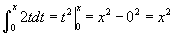
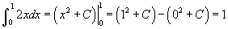
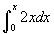

On the previous page we looked at antiderivatives from the point of view of slope (i.e., the integrand of an integral tells us the slope of the antiderivative). We can also look at the antiderivative from the point of view of a Riemann sum. A definite integral has a specific value when the limits of integration are both constants. If one of the limits depends on a variable, then the definite integral becomes a function of that variable, where the output value of this new function for a given input value of the variable is the output value of the definite integral with that input value substituted for the variable in the limit. For example:

shows the evaluation of a definite integral via the Fundamental Theorem of Calculus with constant limits, resulting in a constant value. The "|" notation says to evaluate the expression to the left of the bar at the upper limit, and subtract from that the value of the expression using the lower limit.
has a variable in its upper limit, so using the Fundamental Theorem results in a function as the result. Hence we can think about antiderivatives as being functions that add up area under a curve from some given point.If we use x² + C as the antiderivative in our first example above, we get

in which the C's cancel out. This always happens, so it is common not to bother writing them down when evaluating a definite integral using the Fundamental Theorem.This is because the integration variable (i.e., the t in dt) is only related to the integrand and not to any other part of the expression in which an integral is used. Here we have used separate variables to make it clear that the t and the x are different. If I had instead written

it still means the same thing, because the x in the integrand and the dx, and the x in the upper limit, are different x's. Since this is confusing, it is generally clearer to use different variables for the integrand and the limits when writing out the integral for an accumulation function.